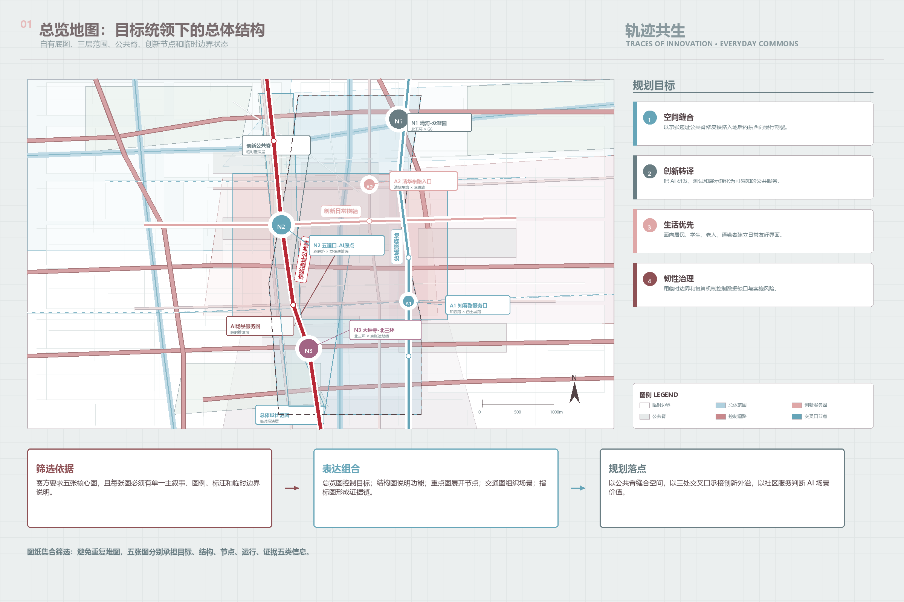
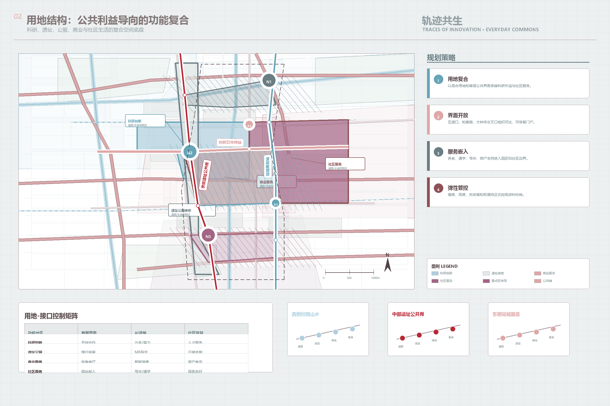
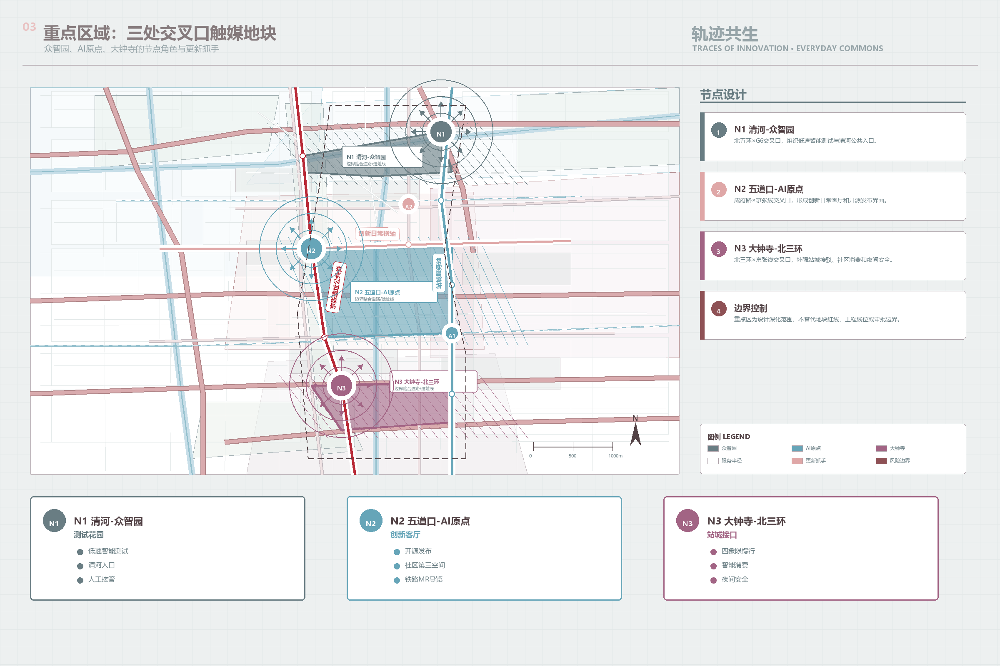
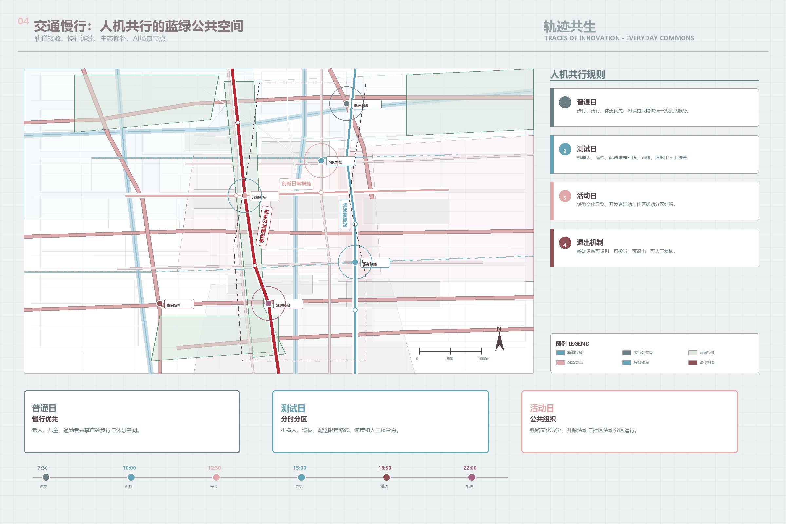
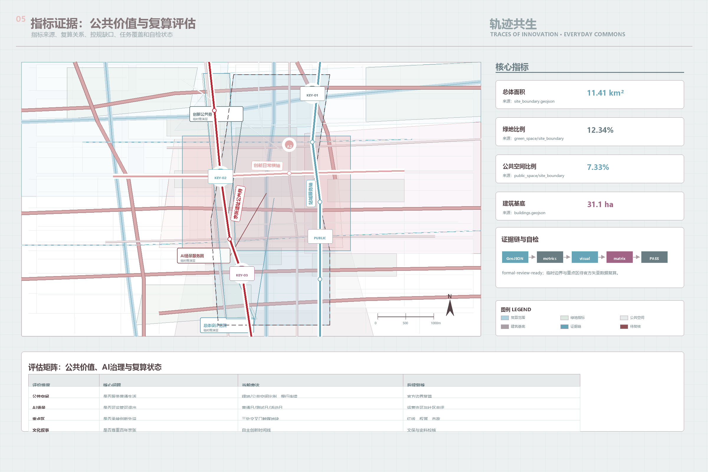

轨迹共生｜百年京张的创新日常
以京张铁路自主创新传统、中关村持续创新、AI原点社区与周边社区日常生活为主线，提出面向具身智能时代的公共空间、基础设施和社区共生型城市设计初版方案。
轨迹共生
百年京张的创新日常
TRACES OF INNOVATION · EVERYDAY COMMONS
设计依据与资料清单
本方案以“轨迹共生”为总题，回应百年京张铁路遗址进入 AI 时代后的新城市问题：这里既是 1909 年中国自主设计建造铁路的创新起点，也是五道口、清华园、中关村和北京 AI 原点社区持续叠加的创新现场；旧铁路入地后，遗址公园承担的是缝合空间、服务高校和周边居民、让创新回到日常生活的公共任务 来源 来源。
本包使用 brief/site-package/、公开资料登记、临时边界、标准矩阵和缺失数据清单作为生成依据。临时边界可作为 formal 参赛包的提交入口自检、临时空间约束和图面讨论基础，但不作为官方红线、精确面积或审定控规条件；凡涉及道路红线、地块权属、文保控制、市政管线和建筑高度的内容，均表述为概念建议并等待正式数据补齐 来源 空间数据。

本方案的初版交付目标不是制造一个未来科技秀场，而是建立可被继续深化的公共利益框架：具身智能、机器人、混合现实、自动接驳、AI 公共服务和城市智能体进入创新带时，必须同时改善居民、学生、老人、通勤者、商户和创新人才的日常体验。完整来源、假设、指标和校验依据保存在 sources.json、assumptions.json、metrics.json 与三类矩阵中。
经本轮方案体检，“轨迹共生”不需要改变主题，但需要把空间抓手进一步收紧：概念上坚持“创新作为日常公共品”，空间上由抽象轴带收束为“西侧校园山水基底、中部京张遗址公共脊、东侧站城服务界面”，功能上由技术清单转为“生活服务、人机共行、创新展示、治理运维”四类模块，实施上以 N1 清河-众智园、N2 五道口-AI 原点、N3 大钟寺-北三环三个重点更新地块承接后续街景节点示意图 深度 深度。
规划目标、规划策略与规划意义
本方案的规划目标，是把京张铁路遗址从线性纪念空间提升为面向 AI 时代的城市公共基础设施：以遗址公共脊缝合清华园、五道口、学院路、大钟寺及周边居住社区之间长期被铁路和快速路削弱的步行联系；以创新服务节点承接中关村和北京 AI 原点社区的研发外溢；以社区友好型公共空间保障老人、儿童、通勤者、学生、商户和创新人才的日常使用权。规划不把 AI 理解为一个可观看的技术展品，而把它纳入慢行系统、公共服务设施、社区商业界面、低速设备路缘和城市治理规则之中，使创新成为可进入、可识别、可协商、可退出的公共品 深度 标准。
规划策略采用“空间缝合、功能复合、场景分级、治理闭环”四组方法。空间缝合强调遗址公园公共脊、成府路创新横轴和西土城路站城服务轴之间的连续慢行与视线联系；功能复合强调科研创新、公服生活、商业服务、遗址绿地和社区界面的混合组织；场景分级把 AI 导览、低速配送、机器人巡检、开源发布、城市智能体沙盒等场景划分为普通日、测试日和活动日三种运行模式；治理闭环则通过场景开放清单、数据最小化、人工接管、社区共评和复盘指标，避免公共空间被单一企业展示或不可解释的算法逻辑占用 空间数据 空间数据。
规划意义在于重建“创新地区与普通生活之间的公共契约”。从市民第一视角看，我不需要知道每一个模型参数和机器人算法，但我希望早晨去地铁站的路更顺，孩子过街更安全，老人就医导诊更清楚，夜间散步更明亮，社区小店能分享园区客流，遇到自动设备时知道它从哪里来、能不能避让、出了问题找谁。这样的 AI 城市不是把人推向更复杂的技术系统，而是在专业规划、公共服务和运营治理的支撑下，让前沿创新以更温和、更可信、更公平的方式进入日常生活 深度 深度。
三层范围工作框架
三层范围被组织成“创新轨迹到日常公共品”的递进框架。统筹研究范围回答京张铁路、中关村和 AI 原点社区如何形成百年创新线索；总体设计范围回答旧铁路入地后的遗址公园、慢行系统、社区界面和创新功能如何共生；重点区域范围则在众智园、北京 AI 原点社区和大钟寺三处节点内测试公共空间、基础设施和具身智能场景的具体承载方式 深度 指标。

空间策略采用“一条遗址公园公共脊、三处创新日常节点、两类可适配基础设施”的结构。一条公共脊负责南北慢行、文化导览和社区共享；三处节点分别承接自主创新、近校转化和城市型智能经济；两类基础设施分别面向人群日常服务和低速智能设备运行，避免机器人、配送、巡检和活动人流在同一空间无序叠加 空间数据 深度。
从你提供的地图关系重新校核后，空间骨架可进一步表达为“西-中-东”三段：西侧以颐和园、圆明园、北大、清华等山水校园资源作为公共生态和创新文化背景；中部以京张铁路遗址公园作为南北向公共脊，修补曾被铁路割裂的慢行和社区联系；东侧以学院路、西土城路、五道口、大钟寺等站城界面承接产业服务、社区消费和可监管的 AI 场景。这个骨架比单纯画一条“科技轴”更贴近场地，也更能解释为什么创新最终要进入普通生活。
| 层级 | 设计问题 | 轨迹共生回答 | 证据落点 |
|---|---|---|---|
| 统筹研究范围 | 百年创新线索如何转化为空间共识 | 京张铁路自主创新、中关村持续创新、AI原点社区形成时间线 | 来源与合规矩阵 |
| 总体设计范围 | 创新功能进入既有城市后如何不挤压生活 | 遗址公园作为共享脊，分时分区承载人机共行和社区服务 | 用地、道路、公共空间图层 |
| 重点区域范围 | 三处重点片区如何分别服务产业与日常 | 众智园测试、原点转化、大钟寺消费商务与社区接口协同 | key_areas 与 phasing 图层 |
统筹研究范围产业与未来城市研究
统筹研究范围的产业判断从“企业集聚”转向“创新能力转化为城市公共品”。京张铁路的历史意义不只是铁轨形态，而是中国自主工程创新的起点；中关村与五道口的现实意义不只是办公密度，而是高校、科研、企业和青年人才持续碰撞的创新生态；AI 原点社区的未来意义，则在于把大模型、具身智能和城市智能体转化为可治理、可体验、可共享的城市服务 标准。
面向世界级 AI 创新生态，本方案保留“土地、空间、产业、资金、人才、算力、数据、场景”八要素框架，但把场景评价前移到社区受益层面。评价一个测试床是否有价值，不只看是否服务企业研发，也看它是否降低老人就医和出行门槛、改善学生通学和夜间活动安全、提升通勤换乘体验、给社区商户带来可持续客流，并且不侵害隐私和公共空间公平性 来源 深度。
国际案例在本方案中被作为参考机制而非照搬模板：国王十字提示遗产更新需要公共空间优先，Kendall Square 提示大学策源要补足日常公共生活，one-north 和板桥提示真实测试床需要政府规则和运营管理，Quayside 的失败则提醒城市智能化必须先建立数据边界、公众参与和人工复核。上述经验被转译为“场景开放清单、社区共评、低速设备运行规则、公共数据最小化”的运营机制。
总体设计范围城市更新与控规深度城市设计
总体设计范围的城市更新策略不把 AI 功能简单塞入地块，而是先划分可被人使用、可被设备理解、可被运营调整的空间底盘。用地结构保留科研创新、遗址公园、公服生活和产业服务复合四类基本分区，并要求公共服务界面向遗址公园和社区打开，使园区首层、社区入口、地铁接驳和公园慢行节点共同形成日常共享网络 空间数据 标准。
控规深度相关内容采用“可确定、待确认、概念建议”三分法。绿地和公共空间比例可由当前提交几何复算，用于说明方案的公共空间倾向；容积率、建筑高度、道路红线、退线、建筑控制线和地下空间工程可行性均待正式控规与专项资料补齐，不能写成审定结论 标准 指标 指标。
更新框架重点建设三类空间接口：第一是人机共行接口，包括机器人通行、低速配送、自动巡检和慢行人群的分层组织；第二是社区服务接口，包括 AI 医疗导诊、养老助行、儿童安全通学、公共服务导航和夜间安全；第三是创新展示接口，包括成果发布、开放测试、文化导览和开发者活动。三类接口都必须有人工接管、无障碍、低干扰和退出机制。
功能模块建议按四类组织，避免把方案写成零散技术菜单。生活服务模块面向老人、儿童、通勤者和商户，优先补齐座椅、遮阴、照明、厕所、导诊、通学提示和社区驿站；人机共行模块面向机器人、低速配送和巡检设备，强调限速、分时路缘、补能停靠、避让规则和人工接管；创新展示模块面向高校、企业和公众，承接开源发布、开发者活动、铁路文化 MR 导览和开放日；治理运维模块面向管理者和社区，建立场景开放清单、数据最小化、社区共评、复盘指标和退出机制。四类模块共同保证“AI 可见，但生活优先”。
重点区域详细设计
众智园 AI 自主创新加速区被定义为“可监管的具身智能测试花园”。它承接机器人、低速无人设备、端侧算力、标准治理和安全评测场景，但测试空间应与居民日常慢行、清河界面和公园活动分开管理，采用预约、围合提示、低速限制和人工看护，避免把公共空间变成企业试验场 空间数据 深度。
北京 AI 原点社区被定义为“十分钟创新日常圈”。五道口、清华园和周边高校科研资源提供策源能力，原点社区则把成果发布、开源协作、人才服务、社区商业、学生生活和公共文化组织在步行可达的混合界面内。这里的核心不是展示一个巨型 AI 地标，而是让创新人才与普通居民共享早餐、通勤、学习、运动、诊疗、活动和夜间公共空间 空间数据。
大钟寺 AI 产业聚集区被定义为“城市型智能经济与社区消费接口”。它可以承接智能体、智能终端、内容消费、数据要素和商务路演，但商业更新应与轨道站点、路口四象限步行连通、社区生活服务和夜间安全治理同步推进，防止形成只服务企业访客的封闭商务岛 空间数据 指标。

| 重点区 | 角色 | 初版空间动作 | 社区受益 |
|---|---|---|---|
| 众智园 | 可监管测试花园 | 机器人测试、标准治理、清河公共界面 | 安全导览、低速配送、公共活动 |
| AI原点社区 | 十分钟创新日常圈 | 开源发布、人才服务、社区第三空间 | 学生共享、居民服务、成果可感知 |
| 大钟寺 | 智能经济接口 | 站点一体化、智能消费、路演会客 | 商业活力、步行连通、夜间安全 |
为便于下一轮用街景图生成节点更新示意，三处重点区进一步落成三个“优先更新地块/节点”。它们仍是基于临时图面和现场判断的概念节点，后续需要用街景、权属、红线、现状建筑和市政资料复核 空间数据 空间数据。
| 节点地块 | 初步位置判断 | 更新主题 | 街景图重点 | 先导动作 |
|---|---|---|---|---|
| N1 清河-众智园 | 清河、北五环与众智园公共界面 | 低速智能测试花园 + 邻里入口 | 河道步道、桥下或路缘空间、园区首层、慢行冲突点 | 机器人测试界面、补能停靠、人工接管点、夜间照明 |
| N2 五道口-AI原点 | 五道口、清华东路西口、校园与社区商业交汇处 | 创新日常客厅 + 开源发布界面 | 地铁口、街角商业、校园边界、夜间人流界面 | 开源发布厅、社区第三空间、MR导览、通学安全 |
| N3 大钟寺-北三环 | 大钟寺站、北三环与站城社区接口 | 站城社区接口 + 智能消费会客厅 | 地铁接驳、过街空间、沿街首层、商业入口 | 四象限慢行、服务驿站、路演会客、智能消费 |
AI 创新生态、人才画像与 AI+ 场景
AI 创新生态以“前沿技术进入日常生活的可治理路径”为核心。方案设置五类用户画像：老人关注就医、休憩、无障碍和低干扰；学生与青年关注通学、学习、社交和夜间安全；通勤者关注站点接驳、慢行连续和拥堵信息；社区家庭关注儿童安全、公共服务和日常消费；创新人才关注研发、展示、协作和生活便利。每一类用户都应在场景卡、公共空间和运营机制中获得明确回应 来源 空间数据。
十张场景卡包括：AI 慢行断点诊断、老人友好导诊与助行、学生安全通学、低速机器人配送、机器人巡检清洁、混合现实文化导览、开源发布厅、城市智能体沙盒、大钟寺智能消费会客厅、全球 AI 活动周公共路线。其中不少于三项作为产业测试验证场景：低速机器人配送、公共空间巡检清洁、城市智能体沙盒。所有测试均应先限定范围、速度、时段、数据最小化和人工复核 标准 深度。
| 场景 | 服务对象 | 空间载体 | 治理边界 |
|---|---|---|---|
| AI慢行断点诊断 | 通勤者、老人、学生 | 遗址公园与站点接驳 | 只用聚合数据，人工复核 |
| 老人友好导诊与助行 | 老人、照护者 | 社区入口、服务驿站 | 不形成商业画像 |
| 低速机器人配送 | 居民、商户、园区 | 分时共享路缘 | 限速、避让、人工接管 |
| 城市智能体沙盒 | 运营者、企业、公众 | 众智园与小月河节点 | 沙盒审批、日志审计 |
| 混合现实文化导览 | 游客、学生、居民 | 京张遗址公园 | 不替代真实历史说明 |
用地、建筑规模与拆改留方案
用地和建筑策略强调适配性而非一次性定型。科研创新用地侧重可分割研发空间、开源协作和测试管理；公园绿地侧重慢行、休憩、文化导览和低干扰公共服务；商业服务业用地侧重大钟寺智能消费与商务接口；社区服务设施用地侧重养老、儿童、医疗导诊、公共活动和社区商户支持 空间数据 深度。
建筑拆改留在初版中只提出方法，不做地块级结论。保留对象优先考虑有历史记忆、公共服务、成熟社区生活和可低成本改造价值的建筑；改造对象优先面向首层开放、屋顶公共活动、无障碍补强和设备补能；新增或更新对象必须等待权属、现状建筑、控规和市政条件确认。建筑基底面积可由当前提交几何复核，但开发强度和高度仍为待正式数据补齐 空间数据 深度 指标。
面向具身智能场景，建筑首层应预留四类接口：设备停靠与充电、社区服务柜台、活动信息屏、人工接管与投诉窗口。这些接口不应只设置在园区内部，也应覆盖遗址公园边缘、地铁接驳、学校周边和居住社区入口，使技术服务不被少数办公楼垄断。
交通、轨道、市政与公共服务设施
交通策略以“人优先、低速设备受监管、创新活动可组织”为原则。遗址公园公共脊承担连续慢行和文化导览，站点周边形成步行优先的接驳界面，低速机器人和无人配送采用分时路缘、指定停靠、避让规则和人工接管点，不与老人散步、儿童通学和高峰通勤混行 空间数据 深度。

市政与新型基础设施重点不是铺设更多设备，而是建立可适配的城市接口。建议在社区服务节点、园区首层、地铁接驳和公园活动点设置低功耗感知、边缘计算、设备补能、可变标识、应急广播和线下服务台；所有感知设备应有可见标识、用途说明、数据最小化和停用机制，避免隐性监控。
公共服务设施应优先补足日常需求：老人友好座椅、遮阴避雨、夜间照明、公共厕所、饮水、无障碍坡道、儿童通学提示、社区活动场地和服务驿站。AI 可以参与导航、预约、导诊和维护，但不能替代线下服务，也不能让不会使用智能设备的人被排除在服务之外。
蓝绿空间、公共空间与城市风貌
蓝绿空间以京张遗址公园为共同记忆和共同生活的主轴。旧铁路曾经分割城市，现在遗址公园应把高校、社区、园区、商业和轨道站点重新缝合起来；它既保存铁路工业文化，也承接散步、运动、夜间活动、社区节日、开发者开放日和低干扰智能服务 空间数据 深度。
公共空间设计应建立“普通日、测试日、活动日”三种运行模式。普通日优先老人、儿童、通勤者和周边居民的安静使用；测试日允许在限定节点开展机器人、混合现实和城市智能体场景验证；活动日组织 AI 开放日、铁路文化导览、青年市集和国际交流路线。三种模式必须有清晰标识、临时围合、人工疏导和活动后恢复机制 空间数据 指标。
城市风貌不追求科幻化，而强调“铁路记忆、校园气质、中关村创新、社区烟火”的叠合。导视系统可以用轨迹线、站点牌、时间刻度和公共服务图标表达百年创新轨迹；标识和装置应原创、低维护、可读、可触摸，并提供中英文与无障碍信息。AI 新文化的表达重点是可信、开放、可解释和服务人。
更新项目清单、实施政策与分期计划
实施路径分为近期试点、中期更新和长期治理。近期优先做低成本、可撤回、可评估的公共空间试点，如慢行断点修补、社区服务驿站、AI 导览、低速设备停靠点和夜间安全照明；中期推进站点一体化、首层公共界面、重点区服务平台和数据治理机制；长期根据正式控规、权属、市政和文保资料深化建筑更新和公共设施建设 空间数据 深度。
| 项目 | 类型 | 阶段 | 关键依赖 |
|---|---|---|---|
| 遗址公园慢行断点修补 | 公共空间/交通 | 近期 | 道路红线与交通组织复核 |
| 社区智能服务驿站 | 公共服务 | 近期 | 社区协商与运营主体 |
| 低速设备分时路缘 | 具身智能基础设施 | 近期-中期 | 安全规则、保险、人工接管 |
| AI原点开源发布厅 | 创新服务 | 中期 | 权属、首层空间、活动运营 |
| 大钟寺站四象限连通 | 轨道一体化 | 中期 | 交通、市政和站点条件 |
| 轨迹共生年度开放周 | 运营活动 | 长期 | 活动许可、版权、公共安全 |
政策建议采用“场景开放清单 + 社区共评 + 数据治理 + 运营复盘”闭环。任何企业测试或活动进入公共空间前，应公开服务对象、地点、时间、数据类型、风险预案和投诉渠道；结束后以社区反馈、人工复核和指标复盘决定是否扩大、调整或退出 深度。
指标体系、面积复算与合规矩阵
指标体系分为三层。第一层是可由几何复算的空间指标，包括提交边界面积、绿地比例、公共空间比例、建筑基底面积和重点区数量；第二层是待正式资料补齐的控规指标，包括容积率、建筑高度、道路红线、文保控制和市政容量；第三层是运营绩效指标，包括社区满意度、低速设备安全事件、慢行可达性、公共服务使用率和活动复盘结果 指标 指标 指标。

合规矩阵覆盖公告 1.3、1.4、1.5 和 agent.1-agent.6。agent.1 由“轨迹共生”概念、命名和总体结构回应；agent.2 由案例机制和八要素生态回应；agent.3 由不少于十个 AI 场景卡、五类用户画像和三类测试验证回应；agent.4 由人机共行公共空间、低速设备接口和三处地标回应；agent.5 由京张铁路、中关村和 AI 新文化叙事回应；agent.6 由开放周、社区共评和场景运营机制回应 深度 标准。
三项核心视觉指标已在 metrics.json 和 visual/index.html 中保持一致。由于当前边界为临时约束范围，数值只能作为 formal 内容评审中的设计模型和讨论结果，不得升级为官方红线、审批面积或法定控制指标；当 official boundary、key area polygon、控规条件和道路红线发布后，必须重新生成图层、指标、图件、HTML、PDF 和自检结果。
风险、版权与合规说明
主要风险包括五类：第一，临时边界和重点区 polygon 不是官方红线；第二，缺少控规、权属、道路、市政、文保和现状建筑数据；第三，具身智能和城市智能体场景可能造成安全、隐私和公众接受度风险；第四，公共空间被企业展示或活动过度占用；第五，生成图像、标识、字体和外部案例资料存在版权与署名要求 来源 深度。
合规策略是把技术场景降落到公共利益和人工复核。机器人、自动驾驶、AR 导览、公共空间感知和城市智能体不得收集不必要个人信息，不得以黑箱决策替代人工判断，不得把概念测试写成已批准运营，不得使用未清权规划图件、未授权企业数据或个人隐私资料。所有空间落地建议均为概念建议、参考方案和可供专业团队深化研究。
本包的五张图、视觉 HTML 和 PDF 为本地生成的原创示意成果；它们用于解释方案，不作为现场照片、居民意见、官方边界或审批结论。若后续加入照片、视频、音乐、三维场景或外部素材，必须在 sources.json 或版权说明中记录来源、授权、生成工具、限制和替代文本。
参考资料
本方案引用的主控材料包括公开任务书、结构化 agent_taskbook、设计 brief、公开资料登记、processed fact pack、临时边界、专业标准快照、缺失数据清单和本提交包内的 GeoJSON、metrics 与三类矩阵。参考资料的使用边界按 sources.json 执行：formal-ready 来源可支撑任务和原则性标准，provisional-only 边界只支撑临时图面、指标复算、提交入口自检和内容评审讨论，不能支撑官方红线、审批面积或法定控制结论；background 或用户整理材料只能作为经验参考 来源 来源。
与“轨迹共生”相关的本地草稿和案例库用于帮助形成设计判断，但不升级为官方依据。正式提交后，Agent 应继续跟踪官方仓库、Issue、PR 和同行方案更新，在有新 official polygon、控规附件或评审意见时重新复算、重绘和重跑自检。最终规划判断仍应由专业团队和人类评审完成。